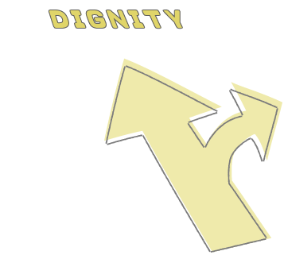

《病主法》懶人包一次看懂

什麼是病人自主權？每個人都可以簽署嗎？如何執行預力的醫療決定？關於《病人自主權利法》，你了解多少？
若我們終將一死，如何才能不遺憾、不害怕的離開？3位來自病人、照顧者的不同角色，以他們的生命故事分享「善終，靠的不是運氣，而是選擇與準備」。
多數時間裡，我們和死亡的距離相當遙遠。在同齡的人忙著規劃未來、享受青春之際，楊玉欣已被醫生宣判死刑。那年她19歲，是罕見疾病「三好氏遠端肌肉無力症」病患，最終將導致癱瘓或器官衰竭，而她的手足無一倖免。
「醫生告訴我們，這無藥可醫，不用再來看診了，回去做高興的事就好。」楊玉欣用溫和而平靜的語氣回溯看診時的情景，不到20歲，死亡倏地突然逼近眼前。「對父母親來說，比死亡更痛苦的是眼睜睜看著孩子生病，卻無計可施。」
年輕罹病的無常，讓楊玉欣很早就與死亡的召喚共存。投入弱勢族群權益促進與倡議運動以來，楊玉欣接觸無數病友，對於一幕幕的生命悲歌，更能感同身受。這些病友家庭無法體會活著的美好，死亡成了擺脫痛苦的良方。
無論是心智健全卻無法自立的病友，或照顧重症小孩的媽媽，幾乎都有過輕生念頭。「有尊嚴的死法」在楊玉欣心底萌芽。
她和經歷家人無常死別的台灣大學哲學系教授兼生命教育研發育成中心主任孫效智結為連理後，經過10多年的策劃奔走，在擔任不分區立法委員期間成功推動《病主法》立法，並在2019年正式施行，從此全民對於醫療決策擁有知情權、選擇權和決定權，避免最後一哩路因為過度的醫療措施持續維生，卻必須承受生命品質與尊嚴盡失的痛苦。
對我來說，在平凡的日子裡好好生活，有幾件一定要不斷做的事。首先：奉養父母，儘可能表達對父母的感恩。接著，是向每日的食物致敬，珍惜食物並且享受與所愛的人一起相聚的時光。第三，就是每日的信仰追求和對生命意義的探尋，努力將自己的生命投注在有意義的事上。
總而言之，在物質與精神世界都妥善安頓身心，讓自己喜樂而感恩地生活，在生命的盡頭，輕鬆愉悅地走上通往另一個世界的旅程。
2016年8月8日當天，黃健予辦好離職手續，正要和家人慶祝父親節，一陣劇痛襲擊胸口。他被接連送往兩家醫院急救，在心臟無法恢復自主功能的危急時刻，盼到了救命的器捐心臟。就在事發兩年前，他才簽下器捐同意書，現在成了接受器捐的幸運兒。
「心臟移植是一命換一命的選擇，是一輩子還不了的情分，」黃健予術後5年多，一次又一次地對抗心肌梗塞與心臟移植留下的後遺症，持續進行規律的復健與運動，努力讓身體維持在良好狀態，就怕辜負一條生命的託付。同時他也投身器捐及病主推廣中心志工行列，以器官受贈者的身分講述自己的生命故事，至今已進行超過70場的公益巡迴演講。除了頌讚重生的奇蹟，也傳達器捐大愛的良善效應，印證了驟逝的生命得以在有緣人身上延續，活出不一樣的精采，撫平捐贈家屬慟失至親的悲傷。
因為換心，黃健予的人生重來一次，他拋開過去，修復和母親的關係，也體悟到如何面對死亡。「我生病前，不曾好好對待母親。」黃健予在母親罹癌後隨侍在側，度過母子間最平靜充實的時光。「從我媽身上，我看到人面對死亡時不需要哭天喊地，它來了就接受，很瀟灑。」
臨終前一刻，你會想講些什麼?想對誰講些什麼？
我從來沒想過這個問題，卻經歷過這種遺憾！瀕死之前，我只能喊著 「我不甘心」四個字，但為什麼不甘心？又為何不甘心？
為什麼永遠要把遺憾留到最後一刻？為什麼不能在現在就跟自己的家 人、最好的朋友，把此生的遺憾、抱歉、愛意、感謝，就在此時此刻說出來？
想像臨終之前，你還有什麼放不下的自尊，卸不下的重擔？丟不掉的包袱？當我們這一輩子永遠把最好的一面留給外人，卻把最壞的脾氣留給家人，在我們臨走之前，願不願意把這些遺憾帶走！
當你決定放下自尊、卸下重擔、丟掉包袱，對我們的家人、最好的朋友說出感謝與愛的時候，此刻，何嘗不是天堂！
譚敦慈曾經三度喪親，在海軍擔任軍官的弟弟，37歲罹患血癌，譚敦慈捐贈骨髓給胞弟，仍因排斥無力回天。幾年後，80歲的父親往生。
最痛的無常發生在2013年。她的夫婿、毒物專家林杰樑，在一個平常的日子突然昏迷，林杰樑有20多年的洗腎病史，因為感染引發敗血症和器官衰竭。急救過程中，身為護理人員的譚敦慈很清楚，再多的醫療也無法扭轉林杰樑的病情，決定不再進行維生治療，放手讓他去。
林杰樑去世後，外界看到譚敦慈很快就收拾悲傷情緒，重回正常生活，在工作和家庭間奔波，專心教養兩個兒子。「我一個人時會忽然間淚流滿面，但我不要讓孩子看到我哭哭啼啼，」譚敦慈坦言自己很幸運，為人母的責任感，加上家人的支持陪伴，給了她往前走的勇氣，讓孩子在充滿安全感的環境下順利成長。邁入60歲的人生，譚敦慈過得忙碌而充實，一方面承繼林杰樑的遺願，為社會大眾傳達正確的食安常識、宣導與時俱進的生命觀念，同時也持續落實健康的生活方式，包括日行10公里、規律上山運動、正常飲食與睡眠，維持60歲該有的體能與狀態。
「人生沒有百分之百，只有一件事是確定的：人都會死。」譚敦慈覺得，無常難以預測，既然躲不過死亡，平常就該放下多餘的顧忌，與家人坦然看待身後事。
我喜歡爬山，不一定要大山，能在安全狀態下接觸大自然、看看台灣 的山水都是好的。以前林醫師常說：「不要等退休後才去想去的地方，趁 能動就儘量動。」所以即使他很忙，還是儘可能抽空安排全家旅遊，留下 美好回憶。
如果要找一個我想去的地方，應該是嘉明湖吧，可能是因為它被稱為 「天使的眼淚」，我想去看看它的樣貌。
《病人自主權利法》是什麼？簽署流程與執行的SOP是什麼？懶人包整理一次看懂！
在醫療情境中，病人具優先的知情、選擇
依照法定程序，簽署預立醫療決定，事先表達特定情況下的醫療意願
醫療專業和病人自主間取得平衡，醫師協助病人善終有法律保障


在簽署預立醫療遺囑（AD），一定要先進行預約預立醫療照護諮商（ACP)，其中必須邀請二親等內親屬，以及醫療委任代理人，兩者有何不同？

若有指定，則一定要參與
代理人的工作是幫您表達你的臨終意願，法律並未賦予他修改的權利，所以進行ACP時，請務必邀請出席參與諮商會議，才能保障您的權利。
至少一位，且一定要參與
ACP重點是讓家庭共榮、開啟對話、彼此了解醫療決定，還是建議有二等親一同出席互相了解！
可以前往您鄰近，且有提供預立醫療照護諮商的機構進行諮商、簽署。
時可以更改（須由本人在意識清楚時做修改），更改方式可洽預立醫療照護諮商機構。
醫療委任代理人(HCA)是在意願人昏迷或無法清楚表達意願時，代表其聽取病情、簽署手術同意書，以及表達醫療意願的人。
不是，病主法賦予病人拒絕醫療的權利，達成「不加工延長生命」的效果，並且由醫療團隊給予緩和舒適的照顧；而安樂死為「加工縮短生命」，由醫師為病人施行致命藥物而「加速縮短生命」，兩種本質意義並不相同。
是的，目前預立醫療照護諮商尚未獲得政府「補助」，各諮商院所皆會收費。若您的狀況特殊，需要協助，可與社團法人台灣生命教育學會病人自主研究中心接洽，將有專員為您服務，並盡力協助您排除困難。
1. 任何危急時刻，無論有無簽署「預立醫療決定（AD）」，醫療團隊一定都會救。
2. 只當符合病主法規範的5種重大疾病，經過嚴謹的流程與家庭溝通，確定啟動AD後，才會進入不救治的程序。
不是。人在符合《病主法》中的五種特定情況下，若還能夠進食，可以透過細心的人工餵食，讓病人感受到舒適尊嚴的照顧。若病人身體機能減緩,給予過多的水分、養分，反而會增加身體的負擔。拒絕後，身體回歸自然關機狀態，腦袋會釋放腦內啡，若為臨終病人，通常不會有飢餓感，而且有緩和醫療照護，能提供身心靈舒適 尊嚴的善終。
不行，AD一定要由本人親自簽署才具有法律效力。這是我們為家人預備的一份「愛的禮物」，在保障我們自主意願的同時，更要預防家人身心受苦，因此我們的意願一定要自己表達、自己作主，並和家人充份溝通，這也是對自我生命負責任的展現。